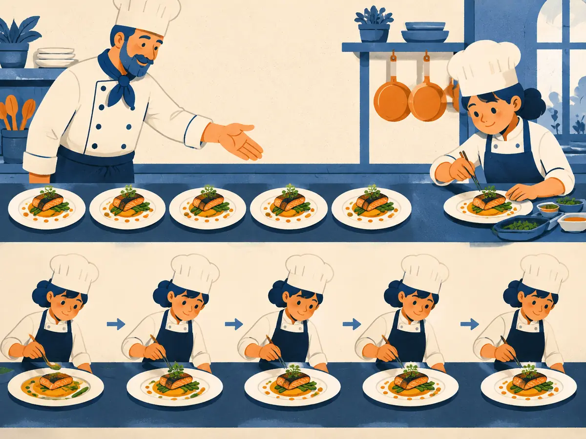

SFT & instruction tuning
A pretrained model is a brilliant autocomplete, not an assistant. Supervised fine-tuning (SFT) shows it thousands of examples of good answers and trains on them with the same next-token loss as pretraining, with one twist: only the answer counts.
By the end you can
- Explain how a base model differs from an assistant, and what SFT data looks like.
- Turn a conversation into a chat-template training example and compute its loss with the prompt masked.
- Say why data quality beats quantity in SFT, and what SFT can't fix on its own.
Take your best guess. Being wrong now helps the right answer stick later.
A base model (pretrained only, no fine-tuning) is given the text “Capital of Peru?”. What is a likely continuation?
- Always a polite, direct answer: “The capital of Peru is Lima.”
- Anything that plausibly follows in a document, such as more quiz questions: “Capital of Chile? Capital of Spain?”
- A refusal, because it hasn't been trained to answer questions
- Nothing at all: base models need a special start token
When fine-tuning on (prompt, ideal response) pairs, which tokens usually contribute to the loss?
- Every token in the conversation, prompt included
- Only the tokens of the assistant's response
- Only the prompt tokens
- Only the final token of the response
From autocomplete to assistant
Pretraining (module M2) produces a base model: a network that predicts the next token of internet-style text. It knows a lot, but its default behaviour is to continue whatever document it is given. A question might be followed by more questions, a forum reply, or an answer in the wrong format.
Post-training is everything that turns that base model into a helpful assistant. The classic recipe comes from InstructGPT (Ouyang et al., 2022) and has three stages:
- SFT on demonstrations of good answers (this lesson).
- A reward model trained on human comparisons of answers (M3.2).
- Reinforcement learning (PPO) against that reward model (M3.3).
Pipelines in 2026 mix and repeat these stages, adding preference optimization such as DPO (M3.4) and RL with verifiable rewards (M3.5), but SFT almost always comes first.
What instruction data looks like
Each SFT example is a short conversation: an optional system message, one or more user turns, and the ideal assistant reply. Stored as data, it's usually a list of messages:
{"messages": [
{"role": "system", "content": "Be concise."},
{"role": "user", "content": "Capital of Peru?"},
{"role": "assistant", "content": "Lima."}
]}The replies come from three main sources:
- People writing them. InstructGPT's SFT set had about 13,000 training prompts, with demonstrations written by hired labelers.
- Existing NLP datasets rewritten as instructions. FLAN (Wei et al., 2021) did this for 60+ datasets and showed that this instruction tuning improves zero-shot performance on tasks the model never saw.
- Synthetic data generated by a stronger model and then filtered. This is now a large share of most SFT mixes.
Chat templates: one conversation, one token stream
The model only ever sees a flat sequence of tokens. A chat template serializes the conversation, using special role tokens to mark who is speaking and where each turn ends. Every model family has its own. Two common ones:
- ChatML style:
<|im_start|>user…<|im_end|><|im_start|>assistant…<|im_end|> - Llama 3 style: the role name sits between
<|start_header_id|>and<|end_header_id|>, and<|eot_id|>ends each turn
The animation uses a simplified <user> / <asst> / <end> version. The end-of-turn token matters: training on it is how the model learns to stop instead of rambling on into a made-up next user turn.
The loss: next-token cross-entropy, on the answer only
Let $R$ be the set of positions whose token belongs to the assistant's reply, including the end-of-turn token. The SFT loss is
$$\mathcal{L}_{\text{SFT}}(\theta) = -\frac{1}{|R|}\sum_{t \in R} \log p_\theta\!\left(x_t \mid x_{<t}\right)$$Here $x_t$ is the token at position $t$, $x_{<t}$ is everything before it (the whole prompt included), $p_\theta$ is the model's predicted probability with parameters $\theta$, and $|R|$ is the number of reply tokens. This is exactly the pretraining loss from M2.2. The only change is that the sum runs over $R$ instead of every position.
In code, masking is one line: set the label of every prompt position to -100, which PyTorch's CrossEntropyLoss ignores by default. The prompt still flows through the model as context; it just isn't graded.
Masking the prompt is the common default, not a law. A few studies (e.g. Shi et al., 2024) find that keeping some loss on the prompt helps when the data is small, so treat it as a tunable choice.
Explain like I'm 5

An apprentice chef already knows lots about food. But they don't yet know how this restaurant serves a dish.
So the master lays out a row of example dishes. The apprentice copies them one by one, and each copy looks a bit more like the master's. Nobody grades how the apprentice read the order slip, only the plate they make.
Where it breaks: the apprentice only copies. Nobody ever says “this plate is better than that one”, so they can't learn to beat the master. That's what reward models and RL add next.
Worked example
The example from the animation: the reply tokens are Lima, ., <end>, and the model gives them probabilities 0.25, 0.80 and 0.50.
- Masked positions: the 5 prompt targets (
Capital…<asst>) contribute 0. - Per-token losses: $-\log 0.25 = 1.39$, $-\log 0.80 = 0.22$, $-\log 0.50 = 0.69$.
- Mean over $|R| = 3$ tokens: $(1.39 + 0.22 + 0.69)/3 = 0.77$.
A templated example has 13 prompt tokens (role tokens included) and a reply of 4 tokens: It, is, Lima, <end>. The model gives them probabilities 0.5, 0.5, 0.25 and 0.5.
- How many positions contribute to the SFT loss?
- Loss on
Lima: - Mean SFT loss:
- Suppose you forget the mask, and each of the 12 masked prompt positions has loss 3.0 (the first token is never predicted, so 13 prompt tokens give 12 prompt targets). Mean loss over all 16 predicted positions:
That last number is why masking matters: unmasked, the hard-to-predict prompt dominates the loss and the gradient, even though you only care about the reply.
Quality beats quantity
LIMA (Zhou et al., 2023, “Less Is More for Alignment”) fine-tuned a 65B LLaMA on just 1,000 carefully chosen prompt–response pairs. In their human study on 300 test prompts, its answers were rated as good as or better than GPT-4's in 43% of comparisons. The authors proposed the Superficial Alignment Hypothesis: almost all knowledge comes from pretraining, and SFT mainly teaches the format and style of a good answer.
Treat that as a strong hint, not a law. It was one evaluation set, and later work shows that more (and more diverse) data still helps for harder skills such as maths, coding and long multi-turn chats. The practical lesson holds up well, though:
- The model imitates everything in the demos, including mistakes, padding and over-hedging.
- Deduplicate, filter out wrong or sloppy answers, and cover diverse tasks in a consistent style.
- A few thousand clean examples often beat a hundred thousand noisy ones.
What SFT can't do on its own
- Only positive examples. SFT shows what a good answer looks like but never says that answer A is better than answer B. Reward models (M3.2) learn exactly that.
- Capped by the demonstrator. It is imitation, so it struggles to beat the people (or models) who wrote the data. Yet people are much better at judging two answers than at writing a perfect one, which is the motivation for preference data.
- Trained on perfect prefixes. During SFT the model always continues a flawless reply. At inference it continues its own output, and early mistakes can snowball (“exposure bias”).
- Can teach making things up. Training a model to confidently state facts it never learned in pretraining can encourage hallucination (Gekhman et al., 2024 report this effect; how big it is depends on the setup).
apply_chat_template in Hugging Face) for both.What exactly does the model train on in SFT, and why are the prompt tokens masked?
Compared with the pretraining loss from M2.2, the SFT loss on a reply token is…
- A mean-squared error between the predicted and ideal embeddings
- A KL divergence to the base model's predictions
- The same next-token cross-entropy, $-\log p_\theta(x_t \mid x_{<t})$, just restricted to reply positions
- A score from a reward model
Why is the end-of-turn token (e.g. <|im_end|>) included in the loss?
- So the model learns when to stop, instead of continuing into an invented next turn
- Because special tokens can't be masked
- It isn't. Special tokens are always masked.
- To make the loss average over an even number of tokens
LIMA fine-tuned a 65B model on just 1,000 examples. Which conclusion is best supported?
- More SFT data always makes things worse
- 1,000 examples are enough for every skill, including hard maths
- SFT is mainly where the model learns its facts
- A small, high-quality set can teach the assistant format, because most knowledge comes from pretraining
Why do most pipelines add a preference or RL stage after SFT?
- SFT can't change the model's weights
- SFT only imitates demos; it never learns which of two answers is better, so it is capped by its demonstrators
- SFT requires a reward model, which RL removes
- SFT only works on base models smaller than 1B parameters
Key takeaways
- A base model continues documents; SFT on prompt → ideal-response pairs teaches it to behave like an assistant.
- A chat template with role tokens turns a conversation into one token stream. Use the same template for training and serving.
- The SFT loss is ordinary next-token cross-entropy, averaged over the reply tokens only (prompt labels = −100), end-of-turn included.
- Quality beats quantity: the model imitates everything, so curate (LIMA: 1,000 good examples went a long way).
- SFT only imitates. Learning “A is better than B” needs preferences: reward models, RLHF and DPO.
Adding cards schedules your first spaced review.